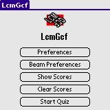
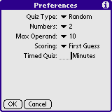
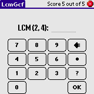
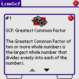
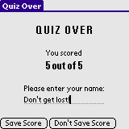
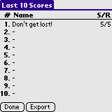
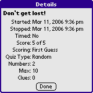

In LcmGcf you practice solving LCMs and GCFs of two or three numbers. LCM is the Least Common Multiple and GCF is the Greatest Common Factor.
You setup the characteristica of the quiz - if it should be timed, what kind of operations you'd like, sizes of the operands and the like. LcmGcf will then display a LCM or a GCF for you to solve. LcmGcf keeps tracks of your successes and failures.
The Last 10 scores can be exported to Memo Pad.
Installation of LcmGcf is like installing any other Palm OS program:
When the synchronization is done you will have a 'LcmGcf' icon in the Unfiled category on your Palm PDA. Feel free to move LcmGcf to another category.
When starting LcmGcf you will be presented with a short menu. Select Preferences to set the characteristicas of the quiz. Select Beam Preferences to beam the preferences settings to another device. Select Show Scores to view the Last 10 Scores. Select Clear Scores to clear the Last 10 Scores list - you will be asked to confirm your action. Select Start Quiz to start the quiz.
The quiz is setup using the controls on the Preferences screen. First select the Quiz Type. You can choose between LCM, GCF or Random. In LCM mode you have to find the Least Common Multiple of two or three numbers. In GCF mode you have to find the Greatest Common Factor of two or three numbers. In Random mode the handheld will randomly determine the quiz for you to take.
Select how many numbers will be involved in the quiz - 2 or 3. Select the max size of each operand.
Select what kind of Scoring should be used. If you select First Guess then a point will only be scored if the first guess is correct. If Correct Guess is chosen, then a point will be scored whenever a correct answer is given. The former is more restrictive.
Select if the quiz should be timed. A blank Timed field or a value of 0 disable the timer. Other values enable the timer for that many minutes.
When running the quiz you will get a display looking like a simple calculator. The buttons on the right, from top to bottom are: backspace, clear all, help and OK (submit the answer). In the upper right corner you have a button to end the current quiz. In a timed game the time remaining will be shown between the 0 and OK buttons (not shown). When you press a button the time seems halt; but fear not - the timer is counted down in the background and as soon as you release the button the timer will catch up.
During the quiz you can get a bit of help on the current problem. Press the Help button (the questionmark button). A short descriptive text of what to solve is shown and also examples of quiz types are shown. In the upper left corner a count of how many times the help was used is shown.
When the quiz is over you wil get a chance to enter your name for the Last 10 Scores list. Select Save Score to save the score. Select Don't Save Score to go to the main form without saving the score.
The Last 10 Scores list lists the last 10 scores (whoah!) The list is not to be taken as a High Score list. Tap an entry to view the details for that entry. Select Export to export the list to Memo Pad.
A detailed view of a randomly chosen entry. This view contains scores, rounds and the selected preferences for the quiz. This is more less how each entry in the Export list will look like.